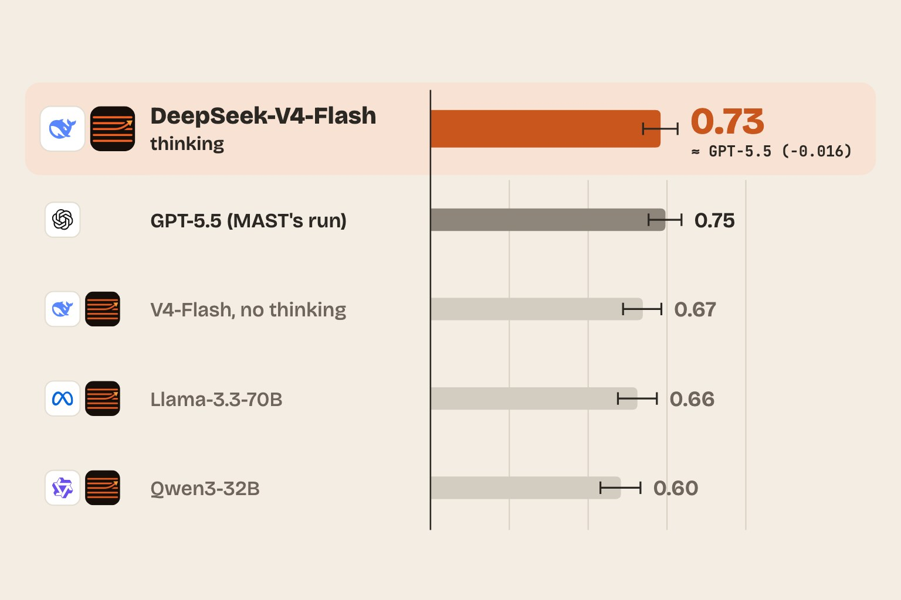
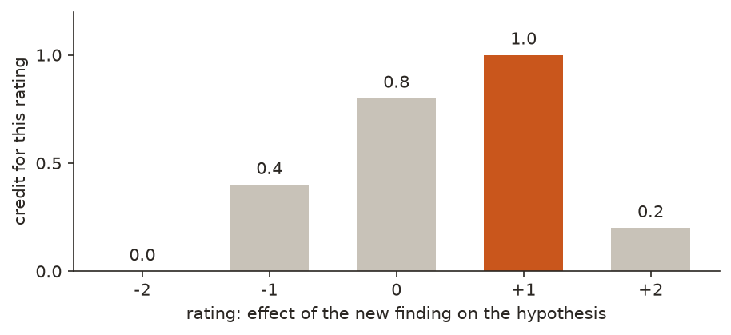
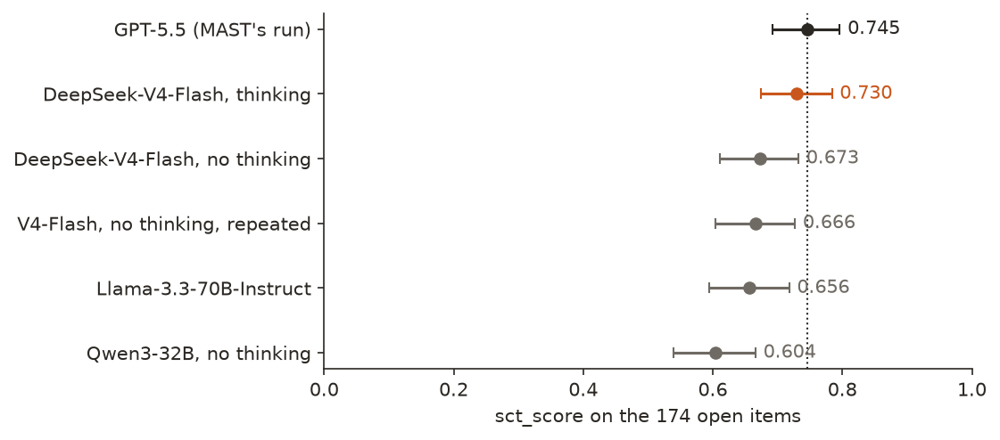
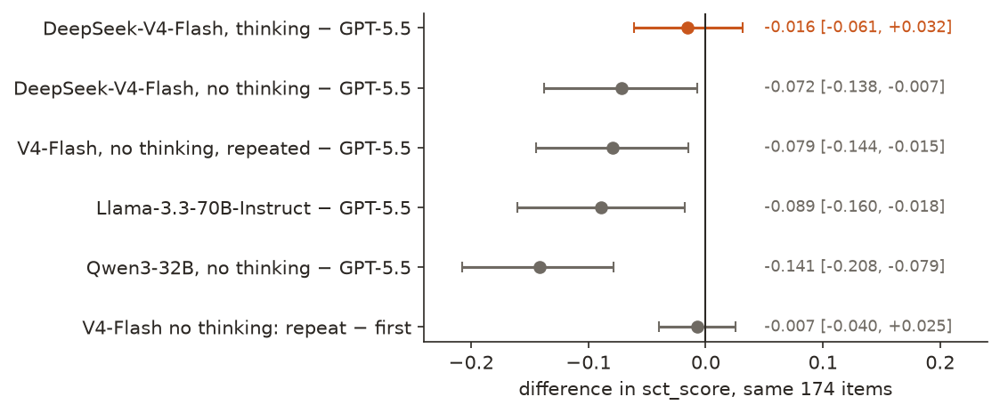

← Research·Experiments·
Reproducing MAST’s clinical reasoning test: an open model that thinks ties GPT-5.5, and the scorer can hide failed items
An independent rerun of a public clinical AI benchmark: its reference result, three open-weight models, how much a repeat moves the score, and two ways its scorer reports a number it should not.

Summary: the short answer and the key results
In short
Does MAST’s Script Concordance Test reproduce, and where do open-weight models land on it?
It reproduces: re-scoring the GPT-5.5 run that MAST ships gives its published 0.745 byte for byte. On the same 174 open items, DeepSeek-V4-Flash, an open-weight model, scores 0.730 when it reasons before answering, a tie with GPT-5.5 (−0.016 [−0.062, +0.032], paired), and 0.673 when it does not. Llama-3.3-70B scores 0.656 and Qwen3-32B 0.604, both below GPT-5.5. Sent the same 174 requests twice at temperature 0, DeepSeek-V4-Flash changed 18 ratings, two of them from +2 to −2; its score moved by 0.007. The scorer has two silent failure modes: items whose request failed, or that are missing from the file, drop out of the denominator (a degraded copy of the GPT-5.5 run scores 0.873, not 0.745), and a hand-written results file with numeric ids scores 0.000. Both are reported upstream with fixes. The study cost about $0.07 of API credit.
Key results
| What we tested | Result | Compared with |
|---|---|---|
| Does MAST’s reference result reproduce? | Exactly: the shipped GPT-5.5 run re-scores to 0.7453 [0.6912, 0.7974], with a byte-identical scorecard and per-item file | The README’s 0.745 ± 0.053 |
| Can an open-weight model match GPT-5.5? (174 items, paired) | A tie: DeepSeek-V4-Flash, thinking, 0.730 [0.674, 0.784]; −0.016 [−0.062, +0.032]; the same rating on 135 of 174 items | GPT-5.5, 0.745 [0.692, 0.796] |
| Without thinking, and other open models? | Below GPT-5.5: V4-Flash 0.673 (−0.072 [−0.138, −0.008]); Llama-3.3-70B 0.656 (−0.089 [−0.160, −0.018]); Qwen3-32B 0.604 (−0.141 [−0.208, −0.079]) | Thinking against not, same model: +0.056 [−0.006, +0.122] |
| Does the same request give the same answer? (temperature 0, same provider) | Not always: 18 of 174 ratings changed, 2 by four steps (+2 to −2); the score went from 0.673 to 0.666 | Paired difference −0.007 [−0.040, +0.026] |
| Does the scorer catch failed or missing items? | No: 20 errored and 9 missing low-scoring items raise GPT-5.5’s score from 0.745 to 0.873, exit code 0 | Reported upstream with a fix that refuses incomplete runs |
| Does a hand-written results file score as documented? | Not with numeric ids: "id": 1 instead of "1" scores 0.000 on every item, exit code 0 | Reported upstream with a fix |
01Introduction
A 64-year-old man has sudden chest pain spreading to his back. A doctor considering a CT angiogram then learns that his right arm has no pulse while his left does. Does that make the scan more or less worth doing? The expert panel says strongly more (+2), since a pulse difference points to a tear in the aorta. Asked this twice, word for word, at temperature 0, one open model answered +2 the first time and −2 the second. The item is one of 174 in a public test of clinical reasoning, and a small picture of what this note measures: how stable, and how trustworthy, a score on such a test is.
What is known. The Script Concordance Test (SCT) is a long-established format for testing clinical reasoning under uncertainty (Fournier et al., 2008); SCT-Bench turned 750 such items into a benchmark for language models (McCoy et al., NEJM AI 2025). The ARISE network’s MAST suite ships a run-it-yourself kit for the 174 public items, with a deterministic scorer, a reference run of GPT-5.5 and a leaderboard (github.com/ARISENetwork/mast).
What is missing. The kit’s reference table has no open-weight model, gives each model’s interval but not the interval of a difference between two, and, as far as we know, its scorer’s edge cases had not been checked from outside.
Does the kit reproduce its own reference number, where do open-weight models land against it, and how far can a reader trust a gap on this test?
What this note does. Its contributions:
- A reproduction of the shipped GPT-5.5 result with the unmodified scorer.
- Scores for three open-weight models, five runs in all, with paired intervals against GPT-5.5 and rating agreement.
- A repeat of one run, to measure how much the same requests move.
- Two scorer failure modes, each with a minimal repro, reported upstream with fixes.
- Every raw reply, with the company that served it.
What would count as an answer. Set before the runs:
- Reproduces means the shipped run re-scores to the published value with the scorer unchanged.
- A model ties GPT-5.5 when the paired 95% interval of its difference contains zero, and is below when the interval excludes zero below.
- A scorer issue counts only if a minimal file reproduces it on the current main branch.
02Setup
2.1 How a Script Concordance item is scored
Each item gives a scenario, a hypothesis (“If you were thinking of: ordering a blood culture”) and a new finding (“And then you find: diffuse coarse crackles in both lungs”). The model rates the finding’s effect on the hypothesis from −2 (much less likely or useful) to +2 (much more). There is no single right answer: a panel of clinicians answered the same item, and a rating earns credit in proportion to how many of them chose it, scaled so the panel’s most common answer earns 1. Figure 1 shows item 1.

dataset/rubrics.jsonl.The headline metric, sct_score, is the mean credit over the 174 items: 1 means the model always gave the panel’s most common answer. Two more terms used below: in the expert set means at least one panellist gave that rating (credit above 0); matches the mode means the rating is the panel’s single most common answer (defined on the 162 items whose panel has one).
2.2 Data and models
| Run | Model and settings | Items | Served by |
|---|---|---|---|
| GPT-5.5 | MAST’s shipped run (examples/gpt-5.5.jsonl); not rerun | 174 | OpenRouter, as shipped |
| DeepSeek-V4-Flash, thinking | deepseek/deepseek-v4-flash-0731, reasoning on | 174 | DeepInfra (fp8) |
| DeepSeek-V4-Flash, no thinking | the same snapshot, reasoning off; run twice | 174 × 2 | DeepInfra (fp8) |
| Llama-3.3-70B-Instruct | meta-llama/llama-3.3-70b-instruct, no reasoning mode | 174 | DeepInfra (fp8) |
| Qwen3-32B, no thinking | qwen/qwen3-32b, reasoning off | 174 | DeepInfra (fp8) |
The 174 items are the benchmark’s open subset: 102 from the Adelaide SCT and 72 from the Open Medical SCT, with their expert panels, as published in SCT-Bench/sctpublic and bundled in the kit. The other 576 items are held out by the benchmark’s authors and were not used. The kit’s own prompt was used unchanged: a short guideline, then the case, asking for Rating: and a value. GPT-5.5’s run used reasoning (its replies are terse because the provider does not return the reasoning), so the thinking run is the like-for-like comparison.
03How the study was run
- Goal, in writing: reproduce the shipped reference, then place open-weight models against it with paired intervals, within a $1.50 budget.
- Re-score the shipped GPT-5.5 run with the kit’s
score.py: 174 replies, compared byte for byte with the shipped scorecard and per-item file. - Run the open models with the kit’s
run.py, unchanged, through OpenRouter, one provider pinned with fallbacks off. A thin wrapper (run_openrouter.py) only adds the serving provider and request id to each record. 870 requests in all; 4 transient connection errors were retried byrun.py, and none was left failed. - Repeat one run (V4-Flash without thinking), identically, to measure what a rerun changes.
- Score every run with the unchanged
score.py: 0 parse errors and 0 failed items in every run. - Add paired statistics from the scorer’s own per-item output (
stats.py), without re-scoring any reply. - Probe the scorer with deliberately incomplete and hand-written files (
scorer_checks.py); each issue was confirmed on the current main branch and reported upstream with a fix.
| Fixed before any run | Changed after reading results |
|---|---|
| The kit’s prompt, temperature 0, 4,096-token cap and one trial per item; the scorer, unmodified; tie / below by the paired interval; GPT-5.5 as the reference; thinking off except in the thinking run; one pinned provider for every open model | None of the runs. The paired statistics, the explorer’s four items and the scorer probes were chosen after the scores were in |
Conditions: OpenRouter, provider DeepInfra pinned for every request (recorded per reply), temperature 0, up to 4,096 output tokens, 12 requests in parallel. The thinking run used 439 output tokens per item on average, the others 5 to 7. Bootstrap: 10,000 resamples of the 174 items, seed 0; the scorer’s own intervals (2,000 resamples) agree to within 0.002. Spend: $0.07 of OpenRouter credit by the account’s usage counter, including setup calls ($0.03 at list price from the logged tokens).
04Results
Five findings:
- The shipped GPT-5.5 result reproduces byte for byte (4.1).
- DeepSeek-V4-Flash in thinking mode ties GPT-5.5; without thinking, it and the other two open models are below (4.2).
- The same requests, sent twice, changed 18 of 174 ratings (4.3).
- The scorer drops failed and missing items from its denominator, which raises the score (4.4).
- A hand-written results file with numeric ids scores zero (4.5).
4.1 The shipped GPT-5.5 result reproduces byte for byte
Re-scoring MAST’s examples/gpt-5.5.jsonl with its score.py gives sct_score 0.7453, 95% interval [0.6912, 0.7974], identical to the shipped examples/gpt-5.5.csv and gpt-5.5_details.jsonl byte for byte. The README’s table reports 0.745 ± 0.053. The subtests also match: Adelaide 0.770, Open Medical 0.711. This checks the scorer and the data, not the model: GPT-5.5 was not rerun.
4.2 DeepSeek-V4-Flash with thinking ties GPT-5.5; without thinking, it and the other open models are below
DeepSeek-V4-Flash in thinking mode scores 0.730 [0.674, 0.784], 0.016 below GPT-5.5 with a paired interval of [−0.062, +0.032]: a tie (Figures 2 and 3). The two give the same rating on 135 of 174 items (Cohen’s κ 0.70) and match the panel’s most common answer about equally often (0.574 and 0.568 of 162 items). Without thinking, the same model scores 0.673, below GPT-5.5 by 0.072 [0.008, 0.138]; Llama-3.3-70B scores 0.656 and Qwen3-32B 0.604, also below.

Thinking moved the same model by +0.056 [−0.006, +0.122], most of the gap to GPT-5.5, though its interval touches zero. It changed the rating on 75 items, gaining more than half a point of credit on 24 and losing as much on 18. The separate intervals of V4-Flash without thinking and of Llama-3.3-70B overlap GPT-5.5’s, yet their paired intervals exclude zero. Because every model answers the same items, the paired interval is the one that answers “is A better than B”; comparing two separate intervals is too cautious.

| Run | sct_score [95%] | Adelaide (102) | Open Medical (72) | In expert set | Matches mode | Same rating as GPT-5.5 |
|---|---|---|---|---|---|---|
| GPT-5.5 (MAST’s run) | 0.745 [0.692, 0.796] | 0.770 | 0.711 | 0.931 | 0.568 | — |
| DeepSeek-V4-Flash, thinking | 0.730 [0.674, 0.784] | 0.755 | 0.694 | 0.891 | 0.574 | 135/174 |
| DeepSeek-V4-Flash, no thinking | 0.673 [0.611, 0.732] | 0.693 | 0.645 | 0.805 | 0.549 | 100/174 |
| the same, repeated | 0.666 [0.604, 0.727] | 0.679 | 0.648 | 0.805 | 0.531 | 96/174 |
| Llama-3.3-70B-Instruct | 0.656 [0.594, 0.718] | 0.655 | 0.658 | 0.822 | 0.506 | 84/174 |
| Qwen3-32B, no thinking | 0.604 [0.539, 0.666] | 0.604 | 0.604 | 0.793 | 0.451 | 92/174 |
The explorer below shows four items: one where the panel is split, the repeat that flipped, one where thinking changed the answer, and one of the five items on which every run, GPT-5.5 included, earned nothing.
Item 1 (Adelaide SCT). A 66-year-old male is in hospital for an elective total hip replacement. He is 1 day post-op. During the night the patient complains of shortness of breath of 1 hour in duration. He has a past medical history of COPD and heart failure. His respiratory rate is 24 and O2 saturation is 93% on 10L of O2 via a non-rebreather mask. He has a temperature of 37.5˚C.
If you were thinking of: Ordering a blood culture. And then you find: He has diffuse coarse crackles in both lungs.
The panel spreads over four answers, so a near miss still earns partial credit.
Credit for each rating (the panel, scaled so its most common answer is 1)
Each run’s rating and the credit it earned
| Run | Rating | Credit |
|---|---|---|
| GPT-5.5 (MAST's run) | −1 | 0.40 |
| DeepSeek-V4-Flash, thinking | −2 | 0.00 |
| DeepSeek-V4-Flash, no thinking | −1 | 0.40 |
| the same request, repeated | −1 | 0.40 |
| Llama-3.3-70B-Instruct | +1 | 1.00 |
| Qwen3-32B, no thinking | +1 | 1.00 |
Item 51 (Adelaide SCT). A 64-year-old male presents to ED with sharp central chest pain for the past 45 minutes. The pain started suddenly while he was at rest. The pain also radiates to his back. He has also been feeling nauseous. He has long-term poorly controlled hypertension. An ECG demonstrates ST elevation in leads II, III and aVF.
If you were thinking of: CT angiogram. And then you find: An absent right brachial and radial pulse. Left radial pulse present.
Asked twice, identically, DeepSeek-V4-Flash without thinking said +2, then −2.
Credit for each rating (the panel, scaled so its most common answer is 1)
Each run’s rating and the credit it earned
| Run | Rating | Credit |
|---|---|---|
| GPT-5.5 (MAST's run) | +2 | 1.00 |
| DeepSeek-V4-Flash, thinking | +2 | 1.00 |
| DeepSeek-V4-Flash, no thinking | +2 | 1.00 |
| the same request, repeated | −2 | 0.00 |
| Llama-3.3-70B-Instruct | −2 | 0.00 |
| Qwen3-32B, no thinking | +2 | 1.00 |
Item 2 (Adelaide SCT). A 66-year-old male is in hospital for an elective total hip replacement. He is 1 day post-op. During the night the patient complains of shortness of breath of 1 hour in duration. He has a past medical history of COPD and heart failure. His respiratory rate is 24 and O2 saturation is 93% on 10L of O2 via a non-rebreather mask. He has a temperature of 37.5˚C.
If you were thinking of: Ordering a CTPA. And then you find: CXR demonstrates no abnormalities.
Without thinking, DeepSeek-V4-Flash says a clear chest X-ray lowers the case for a CT scan (no credit); with thinking it says +1, as GPT-5.5 does, an answer part of the panel gave.
Credit for each rating (the panel, scaled so its most common answer is 1)
Each run’s rating and the credit it earned
| Run | Rating | Credit |
|---|---|---|
| GPT-5.5 (MAST's run) | +1 | 0.60 |
| DeepSeek-V4-Flash, thinking | +1 | 0.60 |
| DeepSeek-V4-Flash, no thinking | −1 | 0.00 |
| the same request, repeated | −1 | 0.00 |
| Llama-3.3-70B-Instruct | −1 | 0.00 |
| Qwen3-32B, no thinking | −1 | 0.00 |
Item 6 (Adelaide SCT). A 25-year-old female presents to the ED with a headache. She describes the headache as poorly localised. The headache has been present for 2 days and has not been alleviated by paracetamol or NSAIDs. She has been having frequent headaches over the last month. She has no significant past medical history. Physical examination reveals a BMI of 32. Her neurological examination and CT head are normal.
If you were thinking of: Performing a lumbar puncture. And then you find: She has bilateral papilloedema.
The whole panel answered −2; all six runs answered +2, the opposite end of the scale.
Credit for each rating (the panel, scaled so its most common answer is 1)
Each run’s rating and the credit it earned
| Run | Rating | Credit |
|---|---|---|
| GPT-5.5 (MAST's run) | +2 | 0.00 |
| DeepSeek-V4-Flash, thinking | +2 | 0.00 |
| DeepSeek-V4-Flash, no thinking | +2 | 0.00 |
| the same request, repeated | +2 | 0.00 |
| Llama-3.3-70B-Instruct | +2 | 0.00 |
| Qwen3-32B, no thinking | +2 | 0.00 |
Four of the 174 open items, chosen to show partial credit, a repeat that flipped, the effect of thinking, and an item every run missed. Ratings are as parsed by MAST’s score.py; written by make_explorer.py.
4.3 The same requests, sent twice, changed 18 of 174 ratings
Rerunning DeepSeek-V4-Flash without thinking, with identical requests at temperature 0 to the same provider, changed the rating on 18 of 174 items: 14 by one step, 2 by two steps and 2 from +2 to −2 (items 51 and 54). The score moved from 0.673 to 0.666 (−0.007 [−0.040, +0.026]); agreement between the two runs was κ 0.86. Temperature 0 does not guarantee the same output from a served model: batching and the order of floating-point operations on the server can change a close call. The paired interval between two strong models here spans about ±0.05, wider than the gaps among the reference table’s top three (Claude Opus 4.7 0.756, GPT-5.5 0.745, Gemini 3.1 Pro 0.721), so one run per model cannot order them.
4.4 The scorer drops failed and missing items, which raises the score
MAST’s SCT score.py skips any record with an error field or no reply, skips any reply it cannot parse, and builds its list of items from the results file rather than the dataset. Turning 20 of the shipped GPT-5.5 run’s 29 lowest-scoring items into the error records run.py writes after failed retries, and deleting the other 9, gives sct_score 0.873 on 145 items instead of 0.745 on 174, with exit code 0. The scorecard has nothing to show that 29 items are absent. Failures that survive retries (content filters, truncation at the token cap, a provider outage) tend to fall on hard items, so the bias is upward. The kit’s other benchmark, First Do NOHARM, had the same issue and was fixed by refusing to score an incomplete run; the SCT kit had not been. We reported it as ARISENetwork/mast#30, with the same fix in #31 (open at the time of writing), which keeps the shipped scorecard byte-identical. None of this note’s runs was affected: every run has 174 scored items, 0 errors and 0 parse failures.
4.5 A hand-written results file with numeric ids scores zero
The kit invites users to skip its runner and supply their own file with at least {id, trial, response}. Written with "id": 1 rather than "id": "1", the shipped GPT-5.5 replies score 0.000 on all 174 items, with no parse errors and exit code 0. The expert panels are keyed by string, every lookup misses, and a missing panel scores zero. A file without the optional metadata also loses its per-source rows. Reported as #32, with a fix in #33 (open at the time of writing). Two smaller findings were not filed separately: the scoring and running scripts’ --limit N select different items (fixed inside #31), and 47 of the 174 items carry an encoding artefact (curly quotes and degree signs stored as their UTF-8 bytes read as Latin-1, as in the upstream data), which the kit documents for one of its six patterns and deliberately leaves in place.
05Implications for AI safety
Clinical benchmarks are read as evidence that a model is fit for a high-stakes setting, and the reader usually sees one number per model. Here the number moved by 0.056 with a reasoning switch, a rerun changed one rating in ten, and a scorer could raise a score by 0.13 without saying so. None of these is a flaw in the test’s design; they are properties of how it is run and reported. A score that silently drops what a model failed on is the evaluation’s version of a model hiding its mistakes.
Risk: very low. Public exam items and public models; no patient data.
The recommendation in one sentence: report clinical benchmark scores with the model’s reasoning mode, a paired interval against the comparison model and a rerun, and make the scorer refuse to score an incomplete run.
06What this does not show
- The full benchmark. 174 of 750 items, from two of ten sources; the held-out items may rank models differently.
- GPT-5.5 under our conditions. Its run is MAST’s, made earlier through its own route; it was re-scored, not rerun, and has no repeat.
- The models at their best. One prompt (the kit’s), one trial, temperature 0; DeepInfra serves these models at reduced (fp8) precision, and another provider or full precision could score differently.
- Clean items. The open items have been public on GitHub since 2025; any of these models may have seen them in training. No contamination check was run.
- Clinical competence. SCT measures agreement with a panel on how a finding shifts a hypothesis; matching a panel is not the same as safe care.
- The leaderboard’s own ordering. The repeat and the paired intervals here suggest the reference table’s top three are close; testing that needs their replies and repeats.
07Reproduce it
Recompute the statistics, figures, explorer, scorer checks and cover from the saved results, in under a minute (the script clones MAST at the commit used here for the explorer and the checks):
experiments/mast-sct/reproduce.sh --scoresRerun from scratch with an OpenRouter key (OPENROUTER_API_KEY); the five runs cost about $0.03 at list price:
experiments/mast-sct/reproduce.sh --dry-run # lists every command
experiments/mast-sct/reproduce.shA rerun will not repeat exactly (section 4.3); expect it to land within the intervals above.
08What’s next
None of these has been run yet:
- Repeats for every model, so each score carries a rerun spread beside its interval.
- The kit’s second benchmark, First Do NOHARM, which uses a model judge and so needs the judge checked first.
- A contamination probe: whether models can complete the open items’ text from a prefix.
09Questions and answers
What is MAST’s Script Concordance Test?
A clinical reasoning benchmark in the ARISE network’s MAST suite: each item gives a case, a diagnostic or treatment hypothesis and a new finding, and the model rates the finding’s effect from −2 to +2. Credit depends on how many of an expert panel chose the same rating. The open subset has 174 items.
Does MAST’s GPT-5.5 result reproduce?
Yes. Re-scoring the shipped GPT-5.5 replies with the kit’s scorer gives 0.7453 [0.6912, 0.7974], byte-identical to the shipped scorecard.
How do open-weight models score on SCT?
On the 174 open items: DeepSeek-V4-Flash 0.730 with thinking and 0.673 without, Llama-3.3-70B-Instruct 0.656, Qwen3-32B 0.604. GPT-5.5 scores 0.745; only DeepSeek-V4-Flash with thinking ties it (−0.016 [−0.062, +0.032], paired).
Is an SCT score stable from run to run?
Not exactly. The same 174 requests to DeepSeek-V4-Flash at temperature 0 changed 18 ratings on a second run, two from +2 to −2; the score moved by 0.007.
What scorer issues were found?
Two silent failures in the SCT score.py: failed and missing items are left out of the denominator, which raised a degraded copy of the GPT-5.5 run from 0.745 to 0.873, and a hand-written results file with numeric ids scores 0.000. Both are reported upstream (ARISENetwork/mast issues #30 and #32) with fixes.
AAppendix: data
Every number comes from a file in experiments/mast-sct/results/; README.md describes them.
raw/<run>.jsonl: one line per item, as MAST’srun.pywrites it:id,trial,response(the reply text),runtime,metadata.source_short, andusagewith token counts,upstream_providerandgeneration_id.scores/<run>.csv: the scorer’s scorecard (category,metric,trials= items,mean,ci= half-width,ci_lo,ci_hi).scores/<run>_details.jsonl: the scorer’s per-item output:rating,expert_modal_rating(null when the panel ties),normalized_score(the credit),in_expert_set.stats.json: per run, sct_score and per-source intervals, in-expert-set and mode-match rates, rating counts, tokens and providers; per pair, the paired difference, exact agreement, κ, within-one-step agreement and the number of items rated differently.scorer_checks.json: the scorer’s output on the two probe files of sections 4.4 and 4.5.
The prompt
The kit’s templates/guideline.md (rate −2 to +2; respond with “Rating: ” and a value) followed by templates/testcase.md filled with the item’s scenario, hypothesis and new finding; no examples, no system prompt.
References
- ARISE network. MAST: Medical AI Superintelligence Test (SCT kit, MIT), commit
57a12c5. - McCoy et al. “Assessment of Large Language Models in Clinical Reasoning: A Novel Benchmarking Study.” NEJM AI, 2025. doi:10.1056/AIdbp2500120; data at SCT-Bench/sctpublic (MIT).
- Fournier, Demeester and Charlin. “Script Concordance Tests: Guidelines for Construction.” BMC Medical Informatics and Decision Making, 2008. PubMed 18785963.
How to cite
@misc{lie2026mastsct,
author = {Albert Lie},
title = {Reproducing MAST’s clinical reasoning test: an open model that thinks ties GPT-5.5, and the scorer can hide failed items},
year = {2026},
month = nov,
url = {https://albertlieyingadrian.github.io/steerlab/experiments/mast-sct/report/}
}